模拟新型冠状病毒Delta变异毒株

概述
本教程将展示如何通过MindSPONGE对新型冠状病毒棘突蛋白S1和人类受体蛋白ACE2进行分子动力学模拟，并在模拟得到的轨迹中分析两个蛋白的相互作用，从而获得揭示突变导致新冠病毒传播力和免疫逃逸能力变化的分子机制的重要信息，为新冠肺炎抗体和疫苗的理性设计提供辅助。
准备环节
实践前，确保已经正确安装最新版本的MindSpore与MindSPONGE。如果没有，可以通过：
MindSpore安装页面安装MindSpore。
MindSPONGE安装页面安装MindSPONGE。
教程中的体系结构文件建模由AmberTools中自带的tleap工具（下载地址http://ambermd.org/GetAmber.php， 遵守GPL协议）完成。
背景介绍
新型冠状病毒肺炎（Corona Virus Disease 2019，COVID-19），简称“新冠肺炎”， 是指2019新型冠状病毒感染导致的肺炎。自2019年12月湖北省武汉市部分医院陆续发现了多例有华南海鲜市场暴露史的不明原因肺炎病例，证实为2019新型冠状病毒感染引起的急性呼吸道传染病以来，新冠肺炎在世界范围内已形成了大流行，截至欧洲中部时间2021年8月26日17时51分（北京时间23时51分），全球确诊病例较前一日增加655952例，达到213752662例；死亡病例增加9142例，达到4459381例。
新型冠状病毒2019-nCoV具有冠状病毒的基本特征，是β冠状病毒属。冠状病毒属的病毒是具有外套膜（envelope）包裹的RNA病毒（图1），其直径约100-160nm，遗传物质在所有RNA病毒中最大。包裹病毒粒子的脂肪膜表面有三个糖蛋白：棘突糖蛋白（S, Spike Protein,是受体结合位点、溶细胞作用和主要抗原位点，图2）；小包膜糖蛋白（E, Envelope Protein，较小，与胞膜结合的蛋白）；膜糖蛋白（M，Membrane Protein，负责营养物质的跨膜运输、新生病毒出芽释放与病毒外包膜的形成）。2019-nCov病毒主要通过棘突蛋白（S蛋白）与宿主细胞受体-血管紧张素转化酶（ACE2）结合来介导病毒的入侵（图3）。
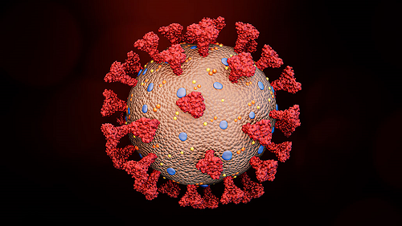
图1: 新型冠状病毒结构示意图 (图片来源：https://www.sciencenewsforstudents.org/article/explainer-what-is-a-spike-protein)
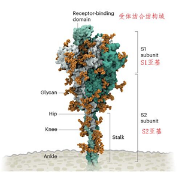
图2: 新冠病毒棘突蛋白结构 (图片来源：https://www.nature.com/articles/d41586-021-02039-y)
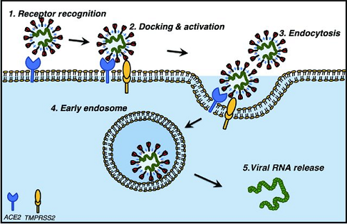
图3: 新冠病毒通过与受体蛋白ACE2结合实现入侵 (图片来源：Mihalopoulos M , Dogra N , Mohamed N , et al. COVID-19 and Kidney Disease: Molecular Determinants and Clinical Implications in Renal Cancer[J]. European Urology Focus, 2020, 6(5).)
由于新冠病毒是一种RNA病毒（正链单股），其遗传物质是RNA。与DNA病毒相比，RNA病毒的稳定性更低，在复制过程中更容易出错，所以新冠病毒会发生大量遗传变异。如果RNA病毒的传播没有被有效控制，那么大量传播的病毒因其自身的不稳定性会发生大量的变异，从而会有很大概率通过自然选择产生出有更强的传播力或者具备强大免疫逃逸的能力的超级毒株。例如，2020年以来印度的新冠疫情一直没有得到很好控制，因此印度出现了新冠病毒变异毒株B.1.617.2，也就是现在正肆虐全球的新冠病毒“德尔塔（Delta）”毒株。德尔塔变异株的传播能力明显增强，潜伏期和隔代间期缩短，并可能导致疾病严重程度增加，迅速成为了目前全球流行的优势毒株。
模型建立
本教程将对3个蛋白质复合物体系进行模拟，首先是野生型新冠病毒S1蛋白的受体结合结构域（RBD）与受体蛋白ACE2的复合物，二是在北京新冠肺炎患者中发现的宿主内单碱基突变L452Q的S1蛋白的RBD与ACE2的复合物，最后我们将对德尔塔毒株的S1蛋白RBD与ACE2的复合物进行模拟研究。
野生型新冠病毒S1蛋白的RBD与ACE2的复合物体系建立
晶体结构下载
分子模拟体系需要在相关实验中解出结构的基础上进行搭建，因此我们首先需要找到高精度的合适实验结构。世界上首个新冠病毒的高清晶体结构，最早由上海科技大学饶子和、杨海涛课题组解出，而我们所关注的S1蛋白RBD与ACE2的复合物晶体结构也是由中国科学家解出。我们在蛋白质晶体数据库网站上搜索ID 6lzg即可找到并下载相应的pdb文件，如图4所示。
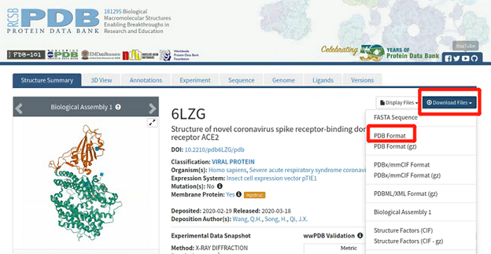
图4: 野生型新冠病毒S1蛋白的RBD与ACE2的复合物pdb
pdb文件预处理
从蛋白晶体数据库中下载的原始pdb文件往往会因为原子命名方式与分子模拟软件中有差别，所以需要进行预处理，以使pdb文件的内容可以被分子模拟建模工具正确识别和处理。AmberTools工具包里包含大量分子模拟系统建模过程中有用的工具，这里我们就需要用到其中的一个工具pdb4amber。针对我们的体系，具体使用命令为：
pdb4amber -i 6lzg.pdb -o yourname.pdb --reduce --dry
其中，-i指定读入的pdb文件，-o指定处理后的输出文件名，--reduce将补上pdb文件中缺失的H原子，而--dry则是去除pdb文件中的结晶水（如果认为结晶水很重要，也可以选择保留，不实用--dry选项）。经过处理的6lzg-4amber.pdb中将删除一些原pdb中的解释性信息，并且会将pdb中的氨基酸残基及原子从序号1开始重新编号，原始pdb中残基的序号与处理后pdb中残基序号的对应关系在文件yourname_renum.txt中。如果原始pdb中半胱氨酸中存在二硫键，pdb4amber还会生成一个yourname_sslink的文件（重要！后面步骤会用到该文件），其中包含由二硫键连接的两个半光氨酸的残基序号。在蛋白结晶实验过程中通常会有一些配体被共结晶，因此原始pdb中也会存在一些配体的信息，通常这些配体不是我们所关注的对象，可以用文本编辑器打开yourname.pdb文件，删除其中的配体，比如本例中的配体NAG和ZN。
确定氨基酸残基的质子化状态
我们使用H++网站工具来确定蛋白复合体中氨基酸的质子化状态。
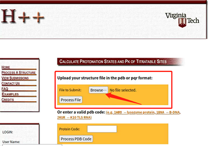
图5：H++网站的初始界面
H++网站免费注册、使用，建议先在H++网站进行注册，否则能处理的蛋白质体系的大小将受到限制。注册完成后，在H++网站上传上一步生成的yourname.pdb文件，并选择Process File按钮，随后出现参数选择界面如下图：
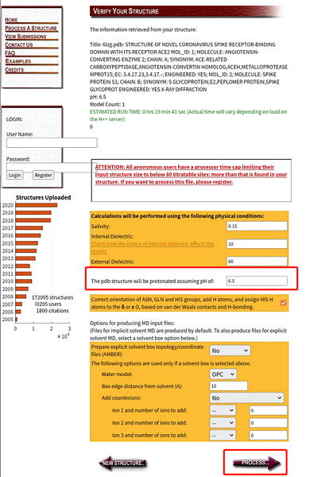
图6：H++网站的参数选择界面
判定离子化基团质子化状态，主要需要设定体系离子浓度和pH值等几个参数，如果已知实验条件可以填入实验中的相应参数值，如不确定实验条件一般可保持网站给出的缺省值。确定好参数后，点击PROCESS按钮，等待一定时间后网站显示出结果页面。在结果页面上点击下载生成的Amber (implicit solvent) Topology File: XXX.top和Amber (implicit solvent) Coordinate File: XXX.crd，然后使用AmberTools中的ambpdb工具从这两个文件生成pdb文件：
ambpdb -p XXX.top < XXX.crd > 6lzg_HPP.pdb
用文本编辑器打开6lzg_HPP.pdb可以看到，根据H++判定的质子化状态，蛋白不同位置的组氨酸（His）被判定为HIE、HID和HIP三种质子化残基。
用AmberTools的tleap工具生成体系结构文件
使用tleap进行体系结构文件生成。
载入蛋白质的力场。
source leaprc.protein.ff14SB
载入水分子力场。
source leaprc.water.tip3p
载入蛋白质结构。loadpdb命令将上一步已处理好的pdb文件读入leap。
Protein = loadpdb 6lzg_HPP.pdb
在蛋白质结构中添加二硫键。
蛋白质中相邻的半胱氨酸可能会由二硫键连接，在pdb预处理过程中由二硫键连接的半胱氨酸的残基序号已写入文件名为
yourname_sslink的文件中，现在我们需要打开该文件，确定半光氨酸残基序号，并在leap中使用bond命令连接两个半胱氨酸的硫原子SG。bond Protein.115.SG Protein.123.SG
添加溶剂和周期性边界条件。
使用solvatebox命令为体系添加周期性水盒子，水层厚度至少为11A。
solvatebox Protein TIP3PBOX 11.0
添加盐离子。
因为分子动力学模拟中计算静电相互作用的Ewald算法要求体系必须是电中性的，因此对于带电体系我们需要添加盐离子以中和体系中的电荷。同时，我们也会多加一些盐离子以模拟实验时的盐离子浓度。为了确定体系的带电量，我们首先需要使用
charge命令。charge protein确定了体系带电量为‘-16.0‘，我们需要通过
addIons命令添加离子。addIons Protein Cl- 104 addIons Protein K+ 120
生成并保存模拟所需拓扑结构文件和坐标文件。
使用命令生成并保存模拟所需的AMBER格式的体系拓扑结构和参数文件s1ace2.parm7以及坐标文件s1ace2.rst7。
saveamberparm Protein s1ace2.parm7 s1ace2.rst7
最后键入
quit命令退出leap。leap会生成一个leap.log文件，其中保存了你在leap中键入的所有命令及leap的所有响应信息备查。quit
更改体系中氢原子质量。
因为体系中质量最小的原子是氢原子，如果在模拟中使用较大的步长（>2fs）往往会造成氢原子运动过快而体系崩溃。我们可以使用AmberTools工具包中的
parmed工具将氢原子的质量设置为3.024道尔顿（Dalton），同时也调整与该氢原子相连接的重原子的质量以保持体系总质量不变。这样处理后，在后续分子动力学模拟中即可以使用4fs的步长，以加快模拟的速度。首先将上一步生成的
s1ace2.parm7文件改名为s1ace2-origin.parm7,然后在命令行输入命令:parmed s1ace2-origin.parm7在parmed程序的提示下完成质量重分配，然后输出新的parm7文件
outparm s1ace2.parm7并退出HMassRepartition outparm s1ace2.parm7
L452Q突变的RBD与ACE2的复合物体系的建立
正如在背景介绍中指出的，新冠病毒是一种RNA病毒，具有不稳定易发生变异的特性，比如最近的一篇研究论文中研究者就提出在新冠肺炎患者样本中发现了棘突蛋白RBD区域发生了多个单点突变（图7）。这里我们以其中的突变L452Q>为例进行分子动力学研究。
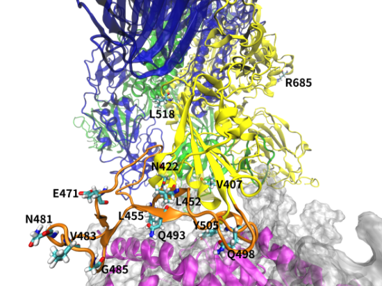
图7：新冠病毒样本中鉴定出的发生寄主内单点突变的位点
因为对比野生型毒株，L452Q突变唯一的区别就是将残基序号为452的亮氨酸（Leucine）突变为谷氨酰胺（Glutamine），所以该体系的建模过程与上一节中描述的过程基本相同，只需用文本编辑器将6lzg_HPP.pdb文件打开，找到L452残基，将其侧链删除，只保留主链的C, CA, N, O四个原子，同时将这四个原子的残基名改为GLN（后续步骤中leap程序会按照力场中残基的模板将GLN的侧链补上）。体系建模的其他步骤与2.1中野生型蛋白的建模完全相同，这里就不再赘述。
德尔塔毒株的RBD与ACE2的复合物体系的建立
德尔塔毒株对比野生型主要是在RBD域发生了L452R/T478K双突变，与以上描述类似，我们需用文本编辑器打开6lzg_HPP.pdb文件，找到L452和T478残基，将其侧链删除，只保留主链的C, CA, N, O四个原子，同时将主链原子的残基名分别改为ARG和LYS，建模的其余流程与上节类似，不再赘述。
模拟流程
体系建模完成后，分子动力学模拟一般可分为四个阶段：能量最小化、体系升温、体系预平衡和生产阶段，已经放置完整的运行脚本中。下面我们逐一介绍各个过程。
能量最小化
能量最小化的作用是去除建模过程中产生的不合理构象，防止在模拟最开始因为局域不合理的构象导致出现较高的能量而引起体系的崩溃。SPONGE需要读入控制模拟选项的输入文件来进行模拟设置，本例中能量最小化分三步完成，每一步最小化中使用不同的下降率，第一步最小化的输入文件min1.in如下：
SARS-CoV-2 min1
mode = Minimization,
step_limit = 5000,
dt = 1e-7,
其中第一行为注释行，mode 代表 MD 模式，其中 Minimization 代表的是能量梯度下降，在这一模式下，dt 为下降率的平方，step_limit 为梯度下降的总步长。amber_parm7和amber_rst7指定读入的拓扑结构和坐标文件，rst指定最小化后输出的坐标文件。执行能量最小化的命令可以参考完整运行脚本。
第二步和第三步的最小化则分别使用dt = 1e-5和dt = 1e-3的下降率，而读入的坐标分别为上一步输出的坐标。min2.in和min3.in，如下：
SARS-CoV-2 min2
mode = Minimization,
step_limit = 5000,
dt = 1e-5,
SARS-CoV-2 min3
mode = Minimization,
step_limit = 5000,
dt = 1e-3,
体系升温
对体系进行能量最小化后，体系仍然处于绝对零度。而蛋白质是在具有一定温度的环境中行使功能的，实验也往往是在一定温度下进行的，所以我们需要对模拟体系升温升压，比如室温室压（300K，1bar）。首先，我们在NVT系综下将体系升温至300K，模拟输入文件heat.in内容如下：
SARS-CoV-2 Heating 300k
mode = NVT,
dt = 1e-3,
step_limit = 100000,
thermostat = langevin_liu,
target_temperature = 300.,
write_information_interval = 1000,
cutoff = 10.0,
这里mode是NVT，表明我们使用NVT系综进行升温，即保持体系体积不变的条件下逐渐（模拟总步数step_limit=100000，步长dt=1e-3，即1fs，总模拟时间step_limit×dt=100 ps）将体系温度升至300 K（target_temperature=300）。控温使用Liu等改进的朗之万控温器（thermostat=langevin_liu）。在分子动力学模拟中对于距离超过一定长度的非键相互作用将进行特殊计算，即距离小于该长度的原子对间的非键相互作用将在实空间中计算，而距离大于该长度的原子对间的非键相互作用将在倒易空间中快速计算（Ewald算法）。 SPONGE中使用 cutoff 这一选项进行调节，这里cutoff=10.0表明距离超过 10Å以上的原子对间的非键相互作用将特殊处理。write_information_interval设定输出的间隔，这里即每 1000 步输出一次结果。
体系升温到室温后，我们需要进一步引入压浴调整体系的体积，使得体系处于室温室压的模拟条件。在这一步骤中我们使用NPT系综，模拟输入文件press.in如下：
SARS-CoV-2 Pressure to 1bar
mode = NPT,
dt= 1e-3,
constrain_mode = simple_constrain,
step_limit = 200000,
thermostat = langevin_liu,
barostat = berendsen,
target_temperature = 300.0,
target_pressure = 1.0,
write_information_interval = 1000,
cutoff = 10.0,
这里mode指定为NPT，表明我们使用NPT系综进行模拟，使用berendsen压浴（barostat = berendsen），目标压强为1bar（target_pressure = 1.0）。
体系预平衡
当我们将体系调整到室温室压后，需要进一步进行一段时间的弛豫进行预平衡，以保证生产阶段的数据分析不会受到体系初始状态的严重影响。预平衡模拟的输入文件eq.in如下：
SARS-CoV-2 Eq at 300K, 1bar
mode = NPT,
dt= 2e-3,
constrain_mode = simple_constrain,
step_limit = 5000000,
thermostat = langevin_liu,
barostat = berendsen,
target_temperature = 300.0,
target_pressure = 1.0,
write_information_interval = 1000,
cutoff = 10.0,
生产阶段模拟
预平衡后就可进入生产阶段模拟，模拟的输入文件md.in如下：
SARS-CoV-2 Production at 300K, 1bar
mode = NPT,
dt= 4e-3,
constrain_mode = simple_constrain,
step_limit = 10000000,
thermostat = langevin_liu,
barostat = berendsen,
target_temperature = 300.0,
target_pressure = 1.0,
write_information_interval = 1000,
cutoff = 10.0,
因为我们修改了体系中氢原子的质量，因此可以注意到以上输入文件中我们使用了4fs的模拟步长（dt=4e-3），总共模拟了40 ns的轨迹。在迭代到达指定步数时，SPONGE会自动终止运行并输出运行时间和模拟的速度。完成本次模拟后，可以继续修改md.in文件，读入上一次输出的坐标，这样就可以将模拟持续进行到需要的时间尺度。
运行完整的运行脚本后，就可以进行下面的分析步骤。完整运行脚本执行指令如下：
bash run_covid.sh s1ace2
结果分析
本例中的结果分析侧重于模拟轨迹的结构分析，通过分析新冠病毒S1蛋白RBD与受体蛋白ACE2复合物模拟结构相对于初始结构的变化RMSD、RBD与ACE2间氢键数目变化及RBD与ACE2的接触面积，提供有助于揭示新冠病毒突变株侵染能力变化分子机理的信息。
轨迹文件格式转换
因为我们将利用AmberTools工具包中的cpptraj工具来分析轨迹，所以我们需要将SPONGE得到的轨迹文件转化为netcdf格式的轨迹文件。案例中提供了转换脚本dat2nc.py，执行转换命令：
python3 dat2nc.py -n 103351 -box mdbox.txt -x mdcrd.dat -nc 0.nc
将SPONGE格式的轨迹文件mdcrd.dat转化为netcdf格式。其中-n 103351是指定体系中共有多少个原子，可以通过打开s1ace2.parm7文件找到，如图中高亮标注的部分。
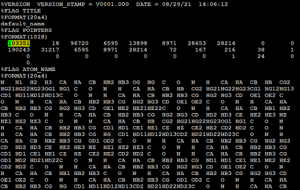
图8：体系的总原子数
分析模拟结构变化
RMSD（Root Mean Square Deviation） 是一种在分子模拟及预测中很常见的评价标准，用以衡量结构内部原子的坐标相对于某些参考分子坐标的相似程度。在这个例子中, 我们将测量模拟轨迹中每个氨基酸残基Cα原子坐标相对于最小化结构的变化。运行cpptraj工具，然后在cpptraj的命令提示符下输入：
parm s1ace2.parm7
trajin 0.nc
reference s1ace2_min3.rst7
rmsd R1 reference :1-791@CA out rmsd_s1ace2.dat
run
quit
其中parm指令指定读入的拓扑结构文件，trajin指令读入的模拟轨迹文件，reference指令指定作为比较标准的参考坐标。:1-791@CA指定要计算RMSD的原子，其中:1-791是指第1至791号残基，即整个蛋白复合物S1 RBD+ACE2，@CA指定只计算每个残基的Cα原子。输出的rmsd_s1ace2.dat文件中的数据可由作图软件绘出。
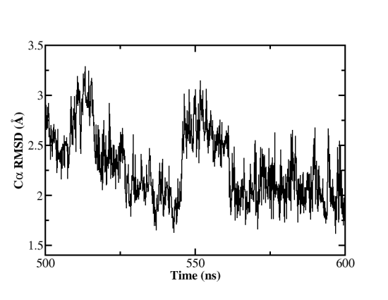
图9：野生型新冠病毒S1 RBD+ACE2复合物模拟的Cα RMSD (500-600 ns)
分析氢键
氢键数目是表征蛋白间结合能力强弱的关键指标，我们同样可以利用cpptraj进行轨迹中结构的氢键分析，运行cpptraj后，输入如下指令：
parm s1ace2.parm7
trajin 0.nc
hbond hb3 out s1ace2-nhb.out :1-791 dist 3.5 angle 135 avgout hbond_detail.txt nointramol
run
quit
hbond指令行中的out用来指定包含轨迹每一帧氢键数目的输出文件，dist 3.5 angle 135指定判定氢键的标准是氢键受体和给体间的距离小于3.5A，形成氢键的H…O…H之间的夹角大于135º，avgout指定了包含形成氢键的原子对具体信息的输出文件，而nointralmo则指定cpptraj程序只计算不同蛋白质之间形成的氢键，同一蛋白（如S1 RBD或ACE2蛋白）自己内部形成的氢键将不进行计算。野生型新冠病毒蛋白模拟的氢键数目变化如图：
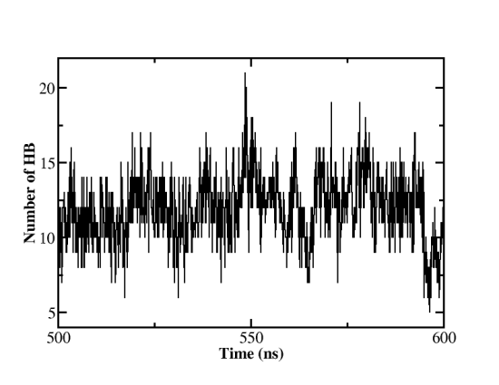
图10：野生型新冠病毒S1 RBD+ACE2复合物模拟中氢键数目变化 (500-600 ns)
分析接触面积
氢键数目是表征蛋白间结合能力强弱的关键指标，我们同样可以利用cpptraj进行轨迹中结构的氢键分析，运行cpptraj后，输入如下指令：
parm s1ace2.parm7
trajin 0.nc
molsurf complex :1-791 radii GB out SAcomplex.dat
molsurf s1 :1-596 radii GB out SAace2.dat
molsurf ace2 :597-791 radii GB out SAs1.dat
run
quit
因为cpptraj并不能直接给出两个蛋白的接触面积，所以我们需要分别计算蛋白复合物的溶剂可及表面积（molsurf complex :1-791 radii GB out SAcomplex.dat，radii GB指定探测小球的半径使用GB半径），S1 RBD蛋白的溶剂可及表面积（molsurf s1 :1-596 radii GB out SAace2.dat）和ACE2蛋白的溶剂可及表面积（molsurf s1 :1-596 radii GB out SAace2.dat）。S1 RBD和ACE2蛋白的接触面积则通过SAs1+SAace2-Sacomplex得到。
paste SAs1.dat SAace2.dat Sacomplex.dat | awk ‘{print $1,$2+$4-$6}’ >contact_area.dat
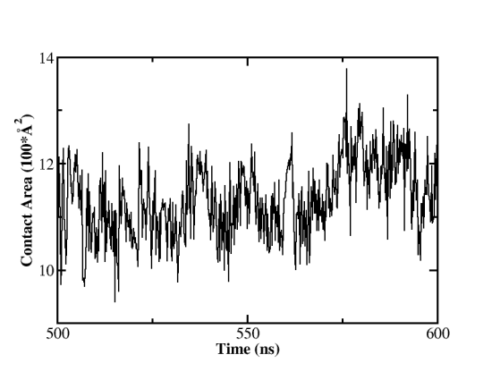
图11：野生型新冠病毒S1 RBD+ACE2复合物模拟中蛋白接触面积变化 (500-600 ns)
结构分析
这里进行L452Q突变及德尔塔毒株的结构分析。通过相似的数据分析流程，我们可以得到L452Q突变和德尔塔毒株模拟的Cα RMSD、蛋白间氢键数目和接触面积。进一步将突变毒株的分析数据与野生型毒株进行对比，就可以直观的看到三者变化的区别，并推测出突变对S1 RBD与ACE2结合的影响。分子动力学模拟结果显示，L452Q单点突变并没有增强病毒与受体蛋白ACE2的结合（氢键数和接触面积与野生型毒株比差异不大，且均略有减小，如图11和表1），因而可推测其应不具有高传染性，这也与实验测量结果符合（病毒侵染293T细胞的能力为1.172:1）。而对于德尔塔毒株（L452R/T478K），其蛋白间氢键数目和接触面积相对野生型毒株均有增加（图11，表1），这有可能就是造成德尔塔毒株传播力强的原因。当然这个简单计算只是给出了一些初步结果，对于德尔塔毒株的研究还需要进一步深入。
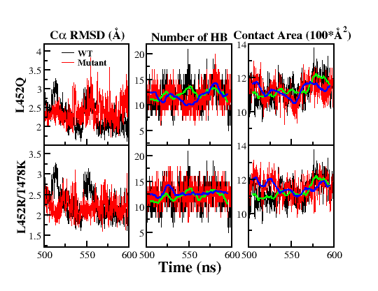
图12：L452Q和德尔塔毒株与野生型毒株模拟数据的比较
表1：L452Q突变和德尔塔毒株与野生型毒株模拟的比较
N_hbond |
Area_contact |
Fold changes of viral entry in 293T cell (ACE2+TMPRSS2) |
|
|---|---|---|---|
WT |
11.9 |
1131.7 |
1 |
L452Q |
11.7 |
1126.5 |
1.172 |
L452R/T478K(Delta) |
12.6 |
1156.0 |
N/A |
结果可视化
对于模拟结构和轨迹的可视化也同样非常重要，我们可以利用VMD软件对分子动力学模拟的结构和轨迹进行可视化，从而对模拟体系进行更深入细致的研究。也可以通过VMD等软件制作模拟轨迹的动画等。使用VMD绘制得到的L452Q和德尔塔毒株结构图如下所示。
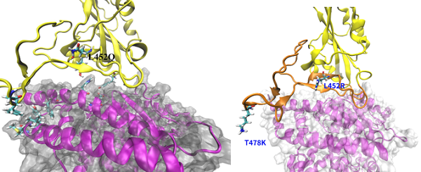
图13：用VMD绘制的L452Q和德尔塔毒株结构图